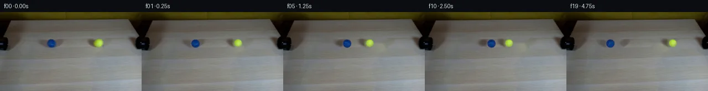

![首帧]()

Round 00
2026-11-05T14:08:43.653143+00:00像素候选变化代码 +251/−0inspection 更新
pixels 68d61de7d11f1ccd · code f9946c8d9ef42148
查看本轮 generate.py 真实 diff
--- previous/generate.py
+++ current/generate.py
@@ -0,0 +1,251 @@
+"""PixelWorld-Vision-Input case_0032 generator.
+
+Local pixel operations only (numpy / OpenCV / PIL):
+ * static background obtained by inpainting the two balls + their contact
+ shadows out of the supplied first_frame.png (Telea);
+ * ball and shadow sprites extracted numerically from frame 0;
+ * analytic equal-speed rolling + equal-mass elastic head-on collision;
+ * per-frame compositing: shadow multiply, rolling sprite (fixed shading +
+ rotating detail), contact squash.
+Frame 00 is written byte-for-byte from first_frame.png.
+"""
+from pathlib import Path
+import numpy as np
+import cv2
+from PIL import Image, ImageDraw
+
+import artifact_io
+
+HERE = Path(__file__).parent
+FRAME0 = np.array(Image.open(HERE / "first_frame.png").convert("RGB"))
+H, W, _ = FRAME0.shape
+assert (H, W) == (144, 256)
+
+# ---------------------------------------------------------------- physics
+SPEED = 4.5 # px / frame, each ball, equal speed
+TC = 8.0 # frame index (float) of first contact
+B0 = np.array([92.8, 57.0]) # blue center at t=0
+Y0 = np.array([178.9, 56.5]) # yellow center at t=0
+RB, RY = 7.4, 6.6 # disk radii (from radial color-rule profiles)
+CONTACT_X = (B0[0] + Y0[0]) / 2.0
+
+
+def disp(t):
+ """Signed x displacement of each ball at frame t (blue: +right)."""
+ return SPEED * min(t, TC) - SPEED * max(0.0, t - TC)
+
+
+def center(ball, t):
+ d = disp(t)
+ if ball == "blue":
+ return np.array([B0[0] + d, B0[1]])
+ return np.array([Y0[0] - d, Y0[1]])
+
+
+def squash(t):
+ """Squash envelope q in [0,1], peaked at contact frame 8."""
+ q = np.clip(1.0 - abs(t - TC) / 1.6, 0.0, 1.0)
+ s = q * q * (3.0 - 2.0 * q * q)
+ return s * s
+
+
+# ------------------------------------------------------------- background
+def build_background(frame, ball_info):
+ mask = np.zeros((H, W), np.uint8)
+ for (cx, cy, r), sh_off, sh_axes in ball_info:
+ cv2.circle(mask, (int(round(cx)), int(round(cy))), int(r + 2), 255, -1)
+ sx = int(round(cx + sh_off[0]))
+ sy = int(round(cy + sh_off[1]))
+ cv2.ellipse(mask, (sx, sy), sh_axes, 0, 0, 360, 255, -1)
+ mask = cv2.dilate(mask, np.ones((3, 3), np.uint8), iterations=1)
+ return cv2.inpaint(frame, mask, 4, cv2.INPAINT_TELEA).astype(np.float32)
+
+
+# shadow geometry per ball (offsets / half-axes measured from residual map)
+SHADOW = {
+ "blue": (np.array([-13.0, -1.0]), (15, 9)),
+ "yellow": (np.array([-14.0, 0.0]), (13, 9)),
+}
+BALL_INFO = [
+ ((B0[0], B0[1], RB), SHADOW["blue"][0], SHADOW["blue"][1]),
+ ((Y0[0], Y0[1], RY), SHADOW["yellow"][0], SHADOW["yellow"][1]),
+]
+BG = build_background(FRAME0, BALL_INFO)
+ORIG = FRAME0.astype(np.float32)
+
+
+# ---------------------------------------------------------------- sprites
+PATCH = 28 # half-size of working patches
+
+
+def disk_alpha(xx, yy, r):
+ """Analytic feathered disk coverage: 1 inside r-0.8, 0 beyond r+0.8."""
+ d = np.hypot(xx, yy)
+ return np.clip((r + 0.8 - d) / 1.6, 0.0, 1.0)
+
+
+def make_ball_sprite(c0, r):
… diff truncated; 164 more lines …